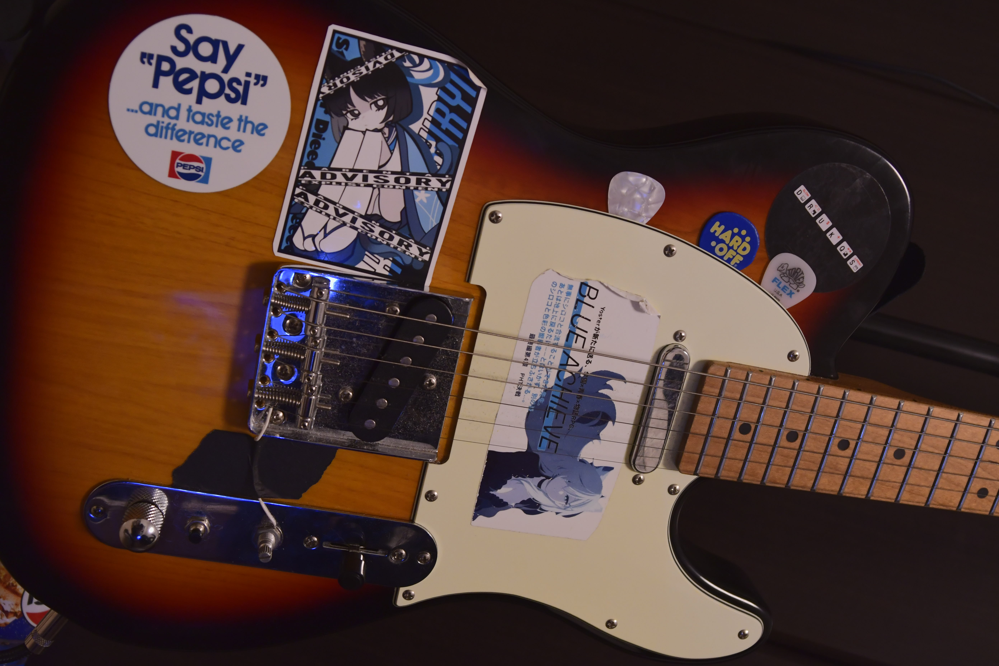
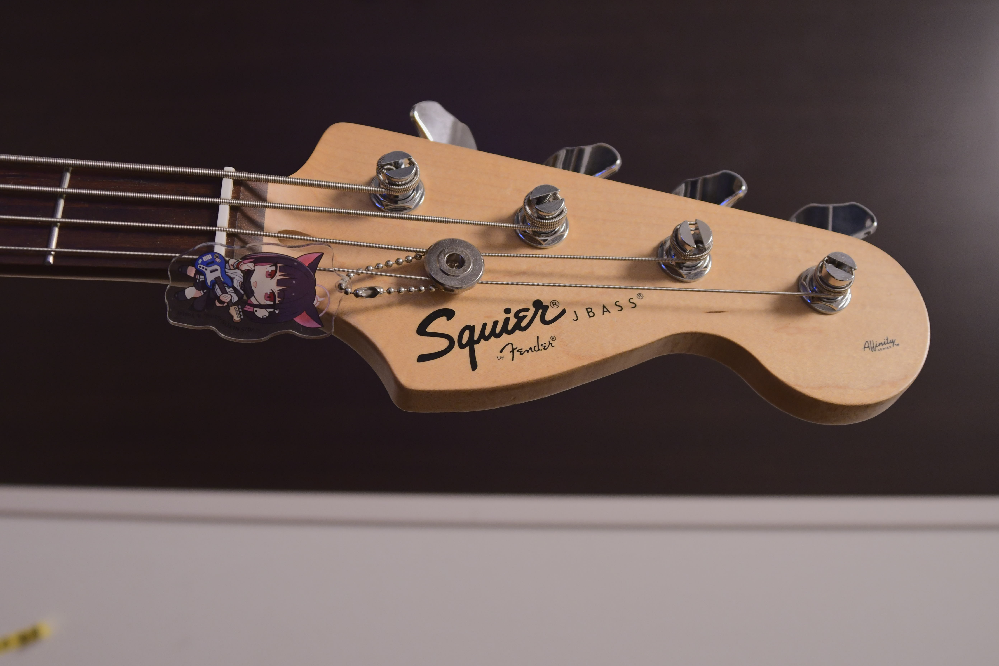

このページでは、自分の使ってるギターやエフェクター、機材たちを紹介していきます。
Bacchus BTE-1-RSM（サンバースト）

あの(要出典)ジョニー・グリーンウッドに憧れて購入。見た目も音も気に入ってる一本。

彼のテレキャスのようにボリュームノブを取り外そうとしポットを破壊、
キルスイッチをつけようとして配線を溶かすなど、いろいろやってしまい... それでも何とかなっている 頑丈だ
アース線を切ってしまったのでセレクターから弦に配線を回している ジョニーのアタックNO.1風ブルアカステッカーは自作、キキョウさんはboothで購入 pepsiステッカーは福生、drukqsステッカーはアルバムについてたやつ
いつかは交換できる部品全部交換したい、とは思っているものの、 そうなったらfenderのほう買ったほうが安上がりになりそう
squier affinity jazz bass metallic blue

4月に購入。このカラーが不人気らしく、めちゃくちゃ中古市場で探して回った。
squier affinity jazz bass metallic blue

カズサさんのキーホルダーをつけている カチャカチャ言ってるし絶対外すべきだよな
こちらもステッカーは自作 カズサモデル
weezerの音がめちゃくちゃ出るのでお気にいりです
ペグはGOTOH製のに換装 音がめちゃくちゃ伸びる たのしいなぁ